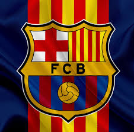
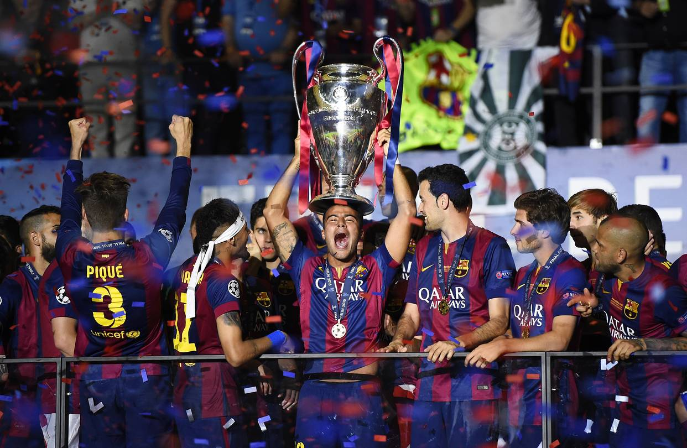

FC Barcelona is a football club from Barcelona, Spain. They compete in La liga, which is the top division of spanish football. They also compete in the UEFA champions league, which is the biggest european club competetion. They are one of the biggest, richest, most decorated clubs in the world. It is one of the only 3 clubs in Spain who have never been relegated from la liga along with Real Madrid and Athletic Bilbao. They are also the only club to achieve the treble twice, and one of the very few clubs to win the sextuple. Many of the sport's all time greats like Messi, Maradona, Cryuff, Rivaldo, Ronaldo(R9), Ronaldinho, Neymar have worn the jersey of this club.
The club was founded on 22 October 1899 by a group of Swiss, Catalan (a state in Spain), German, and English footballers led by Joan Gamper, making it one of the oldest football clubs in the world. They won their first trophy, Copa Macaya in 1902. Walter wild was the first president of the club, and he got Barca a home ground. They had a successful start, winning several trophies in the early 1900s, however in 1908, the club was struggling financially, socially, and in performance. They had not won a competition since 1905. Joan Gamper then became the club president. He said in a meeting, "Barcelona cannot die and must not die. If there is nobody who is going to try, then I will assume the responsibility of running the club from now on." He was club president on five separate occasions between 1908 and 1925, spending a total of 25 years in the role. One of his main achievements was ensuring Barça acquired its own stadium and thus generated a stable income.
On 14 March 1909, the team moved into the Camp de la Indústria, a stadium with a capacity of 8,000. To celebrate their new surroundings, the club conducted a logo contest the following year. Carles Comamala won the contest, and his suggestion became the crest that the club still wears with some minor changes as of the present day.
The club is a fan owned club. Along with Real Madrid, Athletic Bilbao, and Osasuna, Barcelona is organised as a registered association. Unlike a limited company, it is not possible to purchase shares in the club, but only membership. The members of Barcelona, called socis, form an assembly of delegates which is the highest governing body of the club.
Barca fans are reffered to as culers. The nickname culer for a Barcelona supporter is derived from the Catalan cul (English: arse), as the spectators at the first stadium, Camp de la Indústria, sat with their culs over the stand. The club has one of the largest fanbases in the world and the second largest in europe.
In addition to membership, as of March 2022 there are 1,264 officially registered fan clubs, called penyes, around the world.[192] The fan clubs promote Barcelona in their locality and receive beneficial offers when visiting Barcelona.
Barcelona's current home ground (soon to be as of 17 october 2025) is the camp nou, which is one of the most iconic football stadiums and the largest football stadium in europe and the second largest in the world.
Their home kit is the iconic blue and red with different pattern over the years. Their away kit is generally of different colours but yellow and black is the most iconic one.
Their crest consists of the St George Cross in the upper-left corner with the Catalan flag beside it, and the team colours at the bottom.
Barca has rivalries with other clubs in both spain and europe. Some of the most famous ones are:
| Competetion | No. of titles | Seasons won |
|---|---|---|
| La liga | 28 | 1929, 1944–45, 1947–48, 1948–49, 1951–52, 1952–53, 1958–59, 1959–60, 1973–74, 1984–85, 1990–91, 1991–92, 1992–93, 1993–94, 1997–98, 1998–99, 2004–05, 2005–06, 2008–09, 2009–10, 2010–11, 2012–13, 2014–15, 2015–16, 2017–18, 2018–19, 2022–23, 2024–25 |
| Copa del rey | 32 | 1910, 1912, 1913, 1920, 1922, 1925, 1926, 1928, 1942, 1951, 1952, 1952–53, 1957, 1958–59, 1962–63, 1967–68, 1970–71, 1977–78, 1980–81, 1982–83, 1987–88, 1989–90, 1996–97, 1997–98, 2008–09, 2011–12, 2014–15, 2015–16, 2016–17, 2017–18, 2020–21, 2024–25 |
| Supercopa de espana | 15 | 1983, 1991, 1992, 1994, 1996, 2005, 2006, 2009, 2010, 2011, 2013, 2016, 2018, 2023, 2025 |
| UEFA Champions league | 5 | 1991–92, 2005–06, 2008–09, 2010–11, 2014–15 |
| UEFA Super cup | 5 | 1992, 1997, 2009, 2011, 2015 |
| UEFA cup winner's cup | 4 | 1978–79, 1981–82, 1988–89, 1996–97 |
| FIFA club world cup | 3 | 2009, 2011, 2015 |
The ones highlighted in red are records.
Along with these, the club has won various other national and continental competetions.
The club has an active social media presence across various platforms. It is also one of the most followed football club.